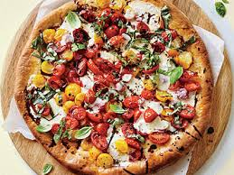

Good Eatz
CREATE YOUR OWN PIZZA
All pizzas are made with a blend of provolone, mozzarella, Pecorino romano cheeses and homemade tomato sauce unless otherwise specified.
Your choice of wheat or white crust.
10.5” Gluten-free crust add $2.00 NOTE: The gluten-free vegan crust is made off-site, however all pizzas are made in a flour-rich environment.
Please note: 1/2 and 1/2 specialty pies incur a 2.00 surcharge. Available only in 12” and 16”.
NOTE: Pesto sauce contains pine nuts.

THE GOODS
PIZZA ALLA QUATTRO FORMAGGIO
10” 11.95 / 12” 14.95 / 16” 21.95
Romano, cheddar, ricotta, mozzarella, provolone, bacon and mushroom.
FAMOUS BBQ
10” 11.95 / 12” 14.95 / 16” 21.95
Barbequed chicken prepared with our homemade BBQ sauce, red onion, green pepper and cheddar. No tomato sauce.
HAWAIIAN
10” 10.95 / 12” 13.95 / 16” 20.95
Ham, pineapple, green pepper and red onion.
SOUTH OF THE BORDER
10” 11.95 / 12” 14.95 / 16” 21.95
House made chorizo, avocado, black olive, pepperoncini, red onion, green pepper and cheddar. Side of sour cream or salsa add .80
GARDEN
10” 11.95 / 12” 14.95 / 16” 21.95
Artichoke hearts, avocado, spinach, green pepper, red onion, black olive and ricotta.
MARGHERITA
10” 10.95 / 12” 13.95 / 16” 20.95
Fresh tomato, fresh garlic, fontina cheese and topped with fresh basil. No tomato sauce.
GREEK
10” 10.95 / 12” 13.95 / 16” 20.95
Spinach, black olive, red onion and feta cheese.
VEGGIE
10” 10.95 / 12” 13.95 / 16” 20.95
Spinach, green pepper, black olive, artichoke hearts and tomato.
MEDITERRANEAN
10” 11.95 / 12” 14.95 / 16” 21.95
Our house made chorizo, pepperoni, feta cheese, spinach and house roasted red pepper.